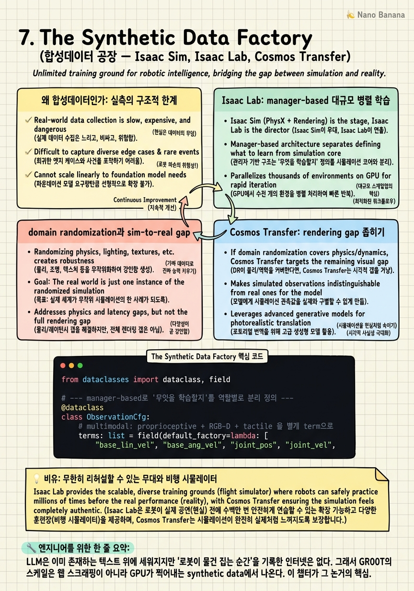

The Synthetic Data Factory

🎯 학습 목표
- GPU 합성데이터가 실측 데이터 수집과 어떻게 다른 게임인지 설명할 수 있다
- Isaac Lab의 manager-based 아키텍처와 대규모 병렬 학습을 안다
- domain randomization이 sim-to-real gap을 줄이는 원리를 안다
- 합성데이터의 한계(rendering gap, physics gap)를 안다
- 비정형 데이터를 grounded supervision으로 바꾸는 게 왜 진짜 병목인지 안다
이 코스를 관통하는 논제를 한 문장으로 압축하면 이렇다 — GR00T의 스케일은 인터넷을 긁어 모은 것이 아니라 GPU가 찍어낸 synthetic data에서 나온다. 언어 모델은 인터넷이라는 이미 존재하는 거대한 텍스트 코퍼스 위에 세워졌지만, 로봇에게는 그런 코퍼스가 없다. '로봇이 물건을 집는 순간'을 기록한 인터넷은 존재하지 않는다. 그래서 로봇 파운데이션 모델을 훈련하려면 데이터를 긁어 오는 게 아니라 찍어내야 한다. 이 챕터는 그 공장, 즉 NVIDIA의 synthetic data factory가 실제로 어떻게 돌아가는지를 해부한다.
핵심 무기는 두 개의 스택이다. Isaac Sim은 Omniverse 위에 세워진 포토리얼 렌더링 + PhysX 물리 시뮬레이션 플랫폼이고, Isaac Lab은 그 위에서 GPU-native로 로봇을 학습시키는 프레임워크다. 여기서 결정적인 숫자가 등장한다 — humanoid locomotion 학습이 단일 GPU에서 135,000 FPS, manipulation은 150,000+ FPS로 돈다. 이것은 수천 개의 로봇 환경을 하나의 GPU 안에서 동시에 굴린다는 뜻이다. 실측 로봇 한 대가 1초에 1초치 경험을 쌓는 동안, 시뮬레이터는 1초에 수천 배의 경험을 쌓는다. 데이터가 사실상 무한해진다.
하지만 무한한 데이터가 곧바로 학습 가능한 supervision은 아니다. 시뮬레이터가 뽑아낸 rollout, 인간의 모션 캡처, 웹 비디오는 raw 상태로는 policy가 먹을 수 없다 — action label도, reward도, task 의미도 붙어 있지 않기 때문이다. 그래서 공장의 마지막 공정은 이 raw 픽셀과 궤적을 supervision으로 변환하는 것이다(autolabel, retarget). 이 챕터는 다섯 갈래로 나아간다: (1) 왜 애초에 합성데이터인가 — 실측의 구조적 한계, (2) Isaac Lab의 manager-based 아키텍처와 대규모 병렬 학습, (3) domain randomization과 sim-to-real gap의 해부, (4) Cosmos Transfer로 rendering gap을 좁히기, (5) 데이터를 supervision으로 바꾸는 autolabel/retarget. 그리고 이 마지막 공정이 다음 챕터의 반론('데이터가 곧 지능인가')으로 이어지는 다리가 된다.
핵심 내용
왜 합성데이터인가: 실측의 구조적 한계
먼저 왜 실측(real-world) 로봇 데이터로는 파운데이션 모델을 훈련할 수 없는지를 못 박자. 문제는 '좀 비싸다'가 아니라 구조적으로 스케일이 안 된다는 데 있다.
실측 로봇 데이터는 실시간의 벽에 갇힌다. 로봇 한 대가 1초 동안 쌓을 수 있는 경험은 정확히 1초치다. teleoperation으로 사람이 로봇을 조종해 데이터를 모으는 방식은 조작자 한 명이 로봇 한 대를 붙들고 앉아 있어야 하고, 하드웨어는 마모되고 고장 나며, 위험한 상황(넘어짐, 충돌)은 반복해서 만들 수도 없다. LLM이 수조 토큰으로 학습된다는 사실과 대비하면, 실측 로봇 궤적을 그 규모로 모으는 것은 물리적으로 불가능에 가깝다.
| 구분 | 실측(real-world) 데이터 | 합성(synthetic) 데이터 |
|---|---|---|
| 수집 속도 | 실시간에 고정 (1초=1초) | GPU 병렬로 수천 배 가속 (135k+ FPS) |
| 비용 | 하드웨어·조작자·시간 선형 증가 | 초기 자산 구축 후 한계비용 거의 0 |
| label | 수동 annotation 필요, 느리고 비쌈 | ground-truth를 시뮬이 이미 앎 (공짜) |
| 위험 상황 | 재현 어렵고 위험 (넘어짐·충돌) | 무한 반복 안전 |
| 다양성 | 실제 환경 수집 범위에 한정 | procedural generation으로 무한 변형 |
| 현실성(fidelity) | 완벽 (그 자체가 현실) | sim-to-real gap 존재 |
표의 마지막 행이 합성데이터의 유일한 약점이자 이 챕터의 나머지가 공략하는 지점이다 — 합성데이터는 빠르고 싸고 무한하지만 '진짜가 아니다'. sim-to-real gap이라는 세금이 붙는다. 그래서 이 챕터의 진짜 이야기는 '어떻게 무한히 찍어내느냐'(Isaac Lab)와 '어떻게 그 세금을 낮추느냐'(domain randomization, Cosmos Transfer)의 두 축으로 갈린다.
왜 하필 NVIDIA가 이 게임을 지배하는가. 대규모 병렬 시뮬레이션은 곧 대규모 병렬 GPU 연산이기 때문이다. 시뮬은 CPU에서 환경 하나씩 순차로 도는 것이 전통이었지만, Isaac Lab은 물리·렌더링·센서 시뮬을 전부 GPU 위로 올려 수천 환경을 SIMD로 굴린다. GPU를 만드는 회사가 GPU 위에서 데이터를 찍어내는 공장을 짓는다 — 이것이 NVIDIA의 구조적 무기다. 데이터 병목을 연산 병목으로 치환하고, 그 연산을 자기가 판다.
Isaac Lab: manager-based 대규모 병렬 학습
Isaac Sim이 무대(포토리얼 렌더 + PhysX 물리)라면, Isaac Lab은 그 무대 위에서 로봇을 훈련시키는 연출 시스템이다. R2D2 팀의 2026년 2월 발표 'Scaling Multimodal Robot Learning'이 이 프레임워크의 설계 철학을 정리한다. 두 가지가 핵심이다 — manager-based 아키텍처와 대규모 병렬화.
manager-based 아키텍처는 학습 환경을 하나의 거대한 덩어리로 짜지 않고, 역할별 매니저로 분리한다. observations, actions, rewards, events(reset·randomization 트리거)를 각각 독립된 manager로 모듈화한다. 왜 이게 중요한가. 로봇 학습 실험은 '보상 함수만 바꿔보고 싶다', '관측에 tactile 센서를 추가하고 싶다', 'reset 조건만 다르게 하고 싶다' 같은 국소적 변경이 끊임없이 일어난다. 모든 것이 한 덩어리로 엉켜 있으면 한 줄 바꾸려다 전체를 깨뜨린다. manager로 분리하면 reward manager만 갈아끼우고 나머지는 그대로 둘 수 있다 — 이것이 실험 반복 속도를 결정한다.
대규모 병렬화가 이 챕터의 심장이다. Isaac Lab은 수천 개의 로봇 환경을 하나의 GPU 안에서 벡터화해 동시에 굴린다. 물리 스텝, 센서 렌더링, 정책 forward가 전부 batched tensor 연산으로 처리된다. 그 결과가 앞서 본 숫자다 — humanoid locomotion 학습 135,000 FPS, manipulation 150,000+ FPS. tiled RTX rendering(수천 개의 카메라 뷰를 하나의 큰 텍스처로 타일링해 한 번에 렌더)과 Warp 기반 센서 시뮬(GPU 커널로 LiDAR·tactile 등을 계산)이 이 처리량을 떠받친다.
이 숫자가 왜 게임체인저인지 감을 잡자. 135,000 FPS는 시뮬레이션이 초당 13만 5천 프레임의 로봇 경험을 만들어낸다는 뜻이다. 실측 로봇이 30 FPS로 돈다면, 단일 GPU 하나가 약 4,500대의 실측 로봇에 맞먹는 경험을 실시간으로 생산한다. 며칠이면 인간이 평생 teleoperation으로도 못 모을 궤적이 쌓인다. '데이터 공장을 돌린다'는 말이 은유가 아니라 문자 그대로의 처리량 이야기임을 여기서 확인한다.
Isaac Lab은 또한 multimodal 센서(RGB-D, LiDAR, tactile, proprioceptive)를 시뮬에서 함께 생성하고, procedural scene generation으로 장면 자체를 절차적으로 무작위 생성한다(같은 방 하나만 반복 학습하면 그 방에 overfit되므로, 방 배치·물체·조명을 절차적으로 바꿔 일반화를 강제한다). 학습 알고리즘은 RL과 IL을 모두 지원하며, RSL-RL·SKRL 같은 GPU-native 라이브러리와 물려 돌아간다. 정리하면 — Isaac Lab은 '무엇을 학습할지(manager로 정의)'와 '얼마나 많이 학습할지(수천 병렬 env)'를 분리해, 데이터 생성 처리량을 GPU 스케일로 밀어올린 프레임워크다.
domain randomization과 sim-to-real gap
무한한 데이터를 찍어내도 그것이 '가짜'라면 실제 로봇에서 무너진다. 이 세금의 정체가 sim-to-real gap이고, 이걸 정확히 세 갈래로 분해해야 각 갈래를 겨눈 처방이 보인다.
-
rendering gap (비전): 시뮬의 카메라 이미지가 실제 카메라 영상과 다르다. 조명, 재질의 미세한 질감, 그림자, 렌즈 왜곡 — 시뮬은 '게임 그래픽 티'가 난다. 비전 기반 정책이 여기서 미끄러진다.
-
physics gap (동역학): 시뮬의 마찰·질량·관성·접촉 모델이 실제와 다르다. 시뮬에서 완벽히 잡던 물체가 실제에선 미끄러지거나, 걷던 로봇이 넘어진다.
-
latency gap (지연): 시뮬은 관측→행동이 즉각적이지만, 실제 로봇은 센서 읽기·통신·액추에이터 반응에 지연이 있다. 지연을 무시하고 학습한 정책은 실제에서 발진(oscillation)하거나 불안정해진다.
이 세 gap을 한꺼번에 공략하는 대표 기법이 domain randomization이다. 핵심 발상은 역설적이다 — 시뮬을 현실과 똑같이 만들려 애쓰는 대신, 시뮬의 파라미터를 일부러 무작위로 크게 흔든다. 매 학습 에피소드마다 질감·조명·마찰계수·물체 질량·센서 지연을 무작위 샘플링한다. 그러면 정책은 어떤 특정 시뮬 설정이 아니라 '가능한 모든 시뮬의 분포'에서 잘 동작하도록 학습된다.
왜 이게 통하는가. 무작위 분포를 충분히 넓게 잡으면, 실제 세계는 그 분포 안의 '하나의 샘플'처럼 보인다. 마찰이 0.5든 1.5든 다 겪어본 정책에게 실제 마찰 0.9는 새로울 게 없다. 즉 domain randomization은 정책을 특정 물리값에 의존하지 않도록 만들어, sim-to-real gap을 정책의 강인함(robustness)으로 흡수한다. physics gap과 latency gap은 이 방식으로 특히 효과적으로 공략된다 — 마찰·질량·지연을 랜덤화 파라미터에 넣으면 된다.
트레이드오프도 분명하다. 분포를 너무 넓게 흔들면 학습이 어려워지고(어떤 설정에서도 완벽하진 않은 보수적 정책이 됨), 너무 좁게 흔들면 실제가 분포 밖으로 새어 나가 gap이 남는다. 이 균형 잡기가 sim-to-real 엔지니어링의 핵심 기술이다. 그리고 rendering gap만큼은 domain randomization으로 흔드는 데 한계가 있다 — 질감을 아무리 랜덤화해도 '실사'와는 여전히 거리가 있다. 이 잔여 rendering gap을 겨냥한 별도 무기가 다음 섹션의 Cosmos Transfer다.
Cosmos Transfer: rendering gap 좁히기
domain randomization이 physics·latency gap을 강인함으로 흡수했다면, 잔여 rendering gap을 정면으로 공략하는 것이 Cosmos Transfer다. 임무는 하나 — sim 렌더를 photoreal로 도메인 전이해 비전 정책이 실사 앞에서 무너지지 않게 만든다.
작동 원리의 직관은 이렇다. Isaac Sim이 장면의 구조를 제공한다 — 물체 배치, 로봇 자세, depth map, segmentation mask 같은 ground-truth 정보. Cosmos Transfer는 이 구조를 보존한 채 겉모습만 photoreal로 갈아끼운다. 게임 그래픽처럼 보이던 프레임이 실제 카메라로 찍은 듯한 프레임으로 바뀌지만, 그 안에서 컵이 어디 있고 로봇 팔이 어떤 자세인지는 시뮬이 준 구조 그대로다.
여기서 합성데이터 공장의 가장 영리한 부분이 드러난다 — label이 공짜로 따라온다. 실측 데이터는 픽셀을 먼저 얻고 사람이 나중에 라벨을 붙여야 하지만, 합성 파이프라인은 순서가 반대다. 시뮬레이터가 '정답'(물체 위치, 자세, action)을 이미 완벽히 알고 있는 상태에서 픽셀을 생성한다. Cosmos Transfer가 겉모습만 실사로 바꿔도 이 정답은 그대로 유효하다. 결과는 '정확한 label이 붙은 실사급 이미지'의 대량 생산이다. domain randomization과 결합하면 하나의 sim 장면에서 조명·배경·질감이 다른 수천 개의 photoreal 변형이 쏟아진다.
Cosmos Transfer가 앞 챕터에서 본 world model과 같은 계열이라는 점을 기억하자. 세상이 어떻게 보이는지에 대한 학습된 표현(WFM)이 있기에, 구조를 입력받아 그럴듯한 실사 겉모습을 생성할 수 있다. 예측(추론)과 생성이 같은 dynamics의 앞뒷면이라는 그 원리가, 여기서는 '데이터 공장의 렌더링 엔진'으로 나타난다.
정리하면 sim-to-real 공략은 분업 구조다 — physics·latency gap은 domain randomization이 강인함으로 흡수하고, rendering gap은 Cosmos Transfer가 photoreal 전이로 좁힌다. 두 무기가 서로 다른 gap을 겨눈다. 이 조합으로 시뮬레이터가 뽑아낸 무한한 장면이 '실제 로봇에서도 통하는' 학습 데이터로 승격된다.
데이터를 supervision으로 바꾸기: autolabel과 retarget
공장의 마지막 공정, 그리고 이 챕터에서 가장 자주 간과되는 부분이다. raw 데이터는 그 자체로 supervision이 아니다. 시뮬 rollout, 인간 모션 캡처, 웹 비디오 — 이것들은 픽셀과 궤적일 뿐, policy가 학습하려면 반드시 다른 것으로 변환되어야 한다.
무엇이 부족한가. policy가 학습되려면 데이터에 세 가지가 붙어 있어야 한다 — (1) action label: 각 프레임에서 로봇이 어떤 행동을 취했는가, (2) reward 또는 task 의미: 이 궤적이 무슨 task를 성공/실패했는가, (3) embodiment 정합: 그 행동이 '우리 로봇의 몸'으로 표현되어 있는가. raw 소스에는 이 셋 중 어느 것도 보장되지 않는다. 웹 비디오에는 action label이 없고, 인간 모션은 인간의 관절 구조로 되어 있어 로봇의 관절과 맞지 않는다.
autolabel이 (1)과 (2)를 공략한다. label 없는 비디오나 rollout에 대해, 모델(흔히 world model이나 inverse dynamics model)이 '이 두 프레임 사이에 어떤 action이 있었을까'를 추론해 action label을 자동으로 붙인다. task 의미도 마찬가지로, 성공 여부를 판정하는 reward model이 자동으로 라벨을 매긴다. 사람이 프레임마다 손으로 다는 대신 모델이 대신 단다 — 그래서 '무한한 데이터'가 실제로 무한한 supervision이 된다.
retarget이 (3)을 공략한다. 인간의 모션 캡처 데이터는 인간의 골격·관절로 기록되어 있다. 이를 로봇의 자유도(DoF)와 링크 구조에 맞게 좌표를 다시 매핑하는 것이 retargeting이다. 사람이 컵을 집는 손목-팔꿈치-어깨의 궤적을 humanoid 로봇의 관절 각도 시퀀스로 번역한다. retarget이 없으면 방대한 인간 모션 데이터는 로봇에게 '읽을 수 없는 외국어'다.
이 공정의 함의를 분명히 하자. synthetic data factory는 사실 두 단계다 — 생성(Isaac Lab이 픽셀·궤적을 무한히 찍어냄)과 변환(autolabel·retarget이 그것을 supervision으로 승격). 생성만으로는 부족하고, 변환이 없으면 그 무한한 데이터는 policy에게 쓸모없는 raw 더미일 뿐이다. 데이터를 supervision으로 바꾸는 이 마지막 공정이 공장의 진짜 부가가치다.
그리고 바로 이 지점이 다음 챕터의 반론으로 이어지는 다리다. 만약 supervision이 결국 모델(autolabel의 inverse dynamics, reward model)이 붙인 것이라면 — 데이터의 품질은 그 라벨링 모델의 품질에 종속된다. '무한한 데이터'가 정말 '무한한 지능'으로 번역되는가, 아니면 라벨링 모델의 한계가 곧 정책의 한계인가? 데이터 공장을 돌리는 것과 지능을 만드는 것 사이의 이 간극이 다음 챕터의 주제다.
💡 비유로 이해하기
합성데이터 공장을 이해하는 가장 좋은 그림은 조종사 훈련이다. 신입 조종사를 진짜 비행기에 태워 사고 상황을 반복 연습시킬 수는 없다 — 위험하고, 비싸고, 무엇보다 느리다. 엔진 화재를 하루에 백 번 겪게 하려면 진짜 비행기 백 번을 태울 게 아니라 비행 시뮬레이터에 앉히면 된다. 실측 로봇 데이터의 한계와 Isaac Lab의 해법이 정확히 이 구도다.
결정적 차이는 규모다. 보통 비행 시뮬레이터는 조종사 한 명을 훈련시키지만, Isaac Lab은 마치 수천 개의 시뮬레이터를 한 방에 깔아놓고 동시에 돌리는 것과 같다. 135,000 FPS라는 숫자는 이 방 전체가 초당 만들어내는 훈련 경험의 총량이다. 진짜 비행기 한 대가 1시간에 1시간치 경험을 쌓을 때, 이 방은 1시간에 수천 시간치 경험을 쌓는다.
Domain randomization은 이 시뮬레이터의 '날씨 다이얼'을 매번 무작위로 돌리는 것이다. 어떤 리허설은 강풍, 어떤 리허설은 짙은 안개, 어떤 리허설은 계기 고장 — 조종사를 특정 조건이 아니라 '모든 가능한 조건'에 노출시킨다. 그렇게 훈련된 조종사에게 실제 비행의 어떤 날씨도 '전에 겪어본 것 중 하나'가 된다. 이것이 sim-to-real gap을 강인함으로 흡수하는 원리다.
Cosmos Transfer는 시뮬레이터의 화면을 게임 그래픽에서 실사 4K로 업그레이드하는 것이다. 창밖 풍경이 만화 같으면 실제 조종석에서 당황하지만, 실사급이면 이질감이 사라진다. 게다가 시뮬레이터는 그 풍경 속 활주로가 어디 있는지 처음부터 알고 있으니, '정답이 붙은 실사 화면'을 공짜로 얻는다.
마지막 공정 autolabel/retarget은 리허설 기록을 교재로 번역하는 일이다. 시뮬레이터가 남긴 방대한 비행 로그는 그 자체로는 숫자 더미다. 각 순간에 '조종사가 무슨 조작을 했고 그게 옳았는지'를 표시(autolabel)하고, 베테랑 조종사의 손동작을 이 기종의 조종간 움직임으로 변환(retarget)해야 비로소 다음 훈련생이 배울 수 있는 교재가 된다. 무대를 무한히 리허설하는 것과, 그 리허설을 배울 수 있는 형태로 바꾸는 것은 별개의 일이다 — 공장은 이 둘을 모두 해야 한다.
💻 코드 예시
Isaac Lab 스타일의 manager-based config로 대규모 병렬 env를 어떻게 정의하는지, 그리고 domain randomization을 event manager로 어떻게 거는지를 개념 스케치한다. 핵심은 두 가지 — (1) num_envs=4096처럼 수천 환경을 한 GPU에서 벡터화해 굴린다는 것, (2) reward/observation/event를 별개 manager로 분리해 국소 변경이 전체를 깨지 않게 한다는 것. 이 구조가 곧 135,000 FPS 처리량과 실험 반복 속도의 밑그림이다.
from dataclasses import dataclass, field
# --- manager-based로 '무엇을 학습할지'를 역할별로 분리 정의 ---
@dataclass
class ObservationCfg:
# multimodal: proprioceptive + RGB-D + tactile 을 별개 term으로
terms: list = field(default_factory=lambda: [
"base_lin_vel", "base_ang_vel", "joint_pos", "joint_vel",
"rgbd_camera", "tactile_forces",
])
@dataclass
class RewardCfg:
# reward term만 갈아끼우면 나머지 매니저는 그대로 (모듈화의 핵심)
track_lin_vel: float = 1.0
track_ang_vel: float = 0.5
energy_penalty: float = -0.001
fall_penalty: float = -10.0
@dataclass
class EventCfg:
"""event manager = reset + domain randomization 트리거.
매 reset마다 물리 파라미터를 무작위 샘플링해 sim-to-real gap을
정책의 robustness로 흡수한다."""
randomize_friction: tuple = (0.4, 1.6) # 마찰계수 범위
randomize_mass: tuple = (-0.5, 2.0) # 링크 질량 가감(kg)
randomize_light: tuple = (300.0, 1200.0) # 조명 강도(lux) -> rendering
randomize_latency: tuple = (0.0, 0.04) # 액추에이터 지연(s) -> latency gap
push_robot_interval: float = 8.0 # 주기적 외력(강인함)
@dataclass
class HumanoidEnvCfg:
num_envs: int = 4096 # 한 GPU에서 4096개 로봇 동시 시뮬
sim_dt: float = 1.0 / 200.0 # 물리 200Hz
decimation: int = 4 # 정책은 50Hz로 행동
episode_length_s: float = 20.0
procedural_terrain: bool = True # 지형을 절차적 생성(overfit 방지)
observations: ObservationCfg = field(default_factory=ObservationCfg)
rewards: RewardCfg = field(default_factory=RewardCfg)
events: EventCfg = field(default_factory=EventCfg)
def apply_domain_randomization(env_states, cfg: EventCfg, rng):
"""reset된 env들에 대해 물리 파라미터를 벡터화 샘플링.
env_states: (num_envs, ...) 텐서 -> 전 env를 한 번에 흔든다."""
n = env_states.friction.shape[0]
env_states.friction[:] = rng.uniform(*cfg.randomize_friction, size=n)
env_states.mass[:] = rng.uniform(*cfg.randomize_mass, size=n)
env_states.light[:] = rng.uniform(*cfg.randomize_light, size=n)
env_states.latency[:] = rng.uniform(*cfg.randomize_latency, size=n)
return env_states
# 학습 루프의 개념 골격 (전 env가 SIMD로 한 스텝씩 전진)
# obs = env.reset() # (4096, obs_dim)
# for step in range(total_steps):
# act = policy(obs) # 4096개 정책 forward 배치
# obs, rew, done = env.step(act) # PhysX가 4096개 물리 병렬
# env.apply_events(done) # done된 env만 DR 재샘플링
# # 이 배치 처리가 곧 135,000 FPS 처리량의 원천이 config가 Isaac Lab 설계의 두 기둥을 그대로 드러낸다. 첫째, ObservationCfg·RewardCfg·EventCfg가 별개 dataclass로 쪼개져 있다 — 보상 실험을 하고 싶으면 RewardCfg만 건드리고 나머지는 손대지 않는다. 이 manager-based 분리가 실험 반복 속도를 좌우한다. 둘째, num_envs=4096이 핵심 숫자다. 학습 루프 주석에서 보듯 obs는 (4096, obs_dim) 텐서이고, policy(obs)도 env.step(act)도 4096개를 한 번에 처리한다. PhysX가 GPU에서 4096개 물리를, tiled RTX가 4096개 카메라 뷰를 배치로 렌더한다 — 이 SIMD 병렬이 135,000 FPS 처리량의 정체다. 셋째, EventCfg와 apply_domain_randomization이 sim-to-real 공략을 코드로 보여준다. randomize_friction·randomize_mass는 physics gap을, randomize_latency는 latency gap을, randomize_light는 rendering 쪽 변동을 겨눈다. 결정적으로 randomization은 매 reset마다 전 env에 대해 벡터화되어 샘플링되므로(rng.uniform(..., size=n)), 4096개 로봇이 각자 다른 물리값을 겪는다 — 하나의 학습 실행이 곧 수천 가지 세계의 분포를 한꺼번에 훑는다. 이 스케치에 없는 것은 autolabel/retarget인데, 그 이유는 그것이 학습 config가 아니라 데이터 생성 이후의 별도 변환 공정이기 때문이다 — 생성(이 코드)과 변환(다음 공정)의 분리가 여기서도 드러난다.
🏭 현업에서의 평가
✅ 시니어가 보는 것
- 실측 데이터의 한계를 '비싸다'가 아니라 실시간의 벽·label 비용·위험 재현 불가 같은 구조적 문제로 설명
- sim-to-real gap을 rendering·physics·latency 세 갈래로 분해하고, domain randomization과 Cosmos Transfer가 각각 어느 gap을 겨누는지 정확히 매핑
- Isaac Lab의 manager-based 아키텍처가 실험 반복 속도에, 대규모 병렬(수천 env)이 데이터 처리량(135k+ FPS)에 기여함을 구분해 이해
- domain randomization의 분포 폭 트레이드오프(너무 넓으면 학습난이도↑·보수적 정책, 너무 좁으면 gap 잔존)를 정량적으로 논증
- raw rollout/video/motion이 곧 supervision이 아니며 autolabel(action·reward)·retarget(embodiment)로 변환돼야 함을 인지
⚠️ 레드 플래그
- 합성데이터를 '무한 공짜 데이터'로만 보고 sim-to-real gap이라는 세금과 label 정확성 이슈를 언급 못 함
- sim-to-real gap을 하나의 뭉뚱그린 문제로 취급해 rendering·physics·latency 분해와 각기 다른 처방을 못 함
- domain randomization을 '시뮬을 현실과 똑같이 만드는 것'으로 거꾸로 이해 (실제로는 일부러 크게 흔드는 것)
- manager-based 모듈화와 대규모 병렬화를 뭉쳐서, 무엇이 실험 속도이고 무엇이 처리량인지 구분 못 함
- autolabel/retarget 공정을 생략하고 raw 시뮬 rollout이 그대로 policy 학습에 쓰인다고 오해
🎤 예상 인터뷰 질문
- 언어 모델은 인터넷 코퍼스로 훈련되는데 로봇 파운데이션 모델은 왜 그럴 수 없는가? 실측 로봇 데이터의 한계를 구조적으로 설명하고, 합성데이터가 그 한계를 어떻게 뒤집는지, 대신 무슨 세금이 붙는지 답하라.
- sim-to-real gap을 세 종류로 분해하라. domain randomization과 Cosmos Transfer는 각각 어느 gap을 어떤 원리로 공략하며, domain randomization으로는 잘 안 좁혀지는 gap은 무엇인가?
- domain randomization의 무작위 분포 폭을 늘리면 무엇이 좋아지고 무엇이 나빠지는가? 실제 세계가 분포 밖으로 새는 경우와 정책이 지나치게 보수적이 되는 경우를 모두 설명하라.
- Isaac Lab이 단일 GPU에서 135,000 FPS를 내는 구조적 이유를 manager-based 아키텍처와 대규모 병렬화로 나누어 설명하라. 둘 중 무엇이 처리량이고 무엇이 실험 속도에 기여하는가?
- 시뮬레이터가 뽑아낸 raw rollout이나 웹 비디오가 그대로 policy 학습에 쓰일 수 없는 이유는? autolabel과 retarget이 각각 무슨 부족분을 채우며, 이 변환 공정의 품질이 정책 성능에 어떤 상한을 거는가?
✨ 핵심 요약
로봇에겐 인터넷 코퍼스가 없다 — 데이터는 긁는 게 아니라 찍어낸다
LLM은 이미 존재하는 텍스트 위에 세워지지만 '로봇이 물건 집는 순간'을 기록한 인터넷은 없다. 그래서 GR00T의 스케일은 웹 스크래핑이 아니라 GPU가 찍어내는 synthetic data에서 나온다. 이 챕터가 그 논거의 핵심.
실측 데이터는 실시간의 벽에 갇힌다
로봇 한 대는 1초에 1초치 경험만 쌓고, teleoperation은 조작자·하드웨어에 선형으로 묶이며, 위험 상황은 재현조차 어렵다. 합성데이터는 이 한계를 뒤집는 대신 sim-to-real gap이라는 세금이 붙는다.
Isaac Lab은 데이터 병목을 GPU 연산 병목으로 치환한다
수천 env를 한 GPU에서 벡터화해 humanoid locomotion 135,000 FPS, manipulation 150,000+ FPS를 낸다. tiled RTX rendering + Warp 센서 시뮬이 처리량을 떠받친다. GPU 회사가 GPU 위에 데이터 공장을 짓는 구조적 무기.
manager-based 아키텍처 = 실험 속도, 대규모 병렬 = 처리량
observations·actions·rewards·events를 별개 manager로 분리해 국소 변경이 전체를 깨지 않게 한다(실험 반복 속도). 수천 env 벡터화가 초당 수만 프레임의 데이터를 만든다(처리량). 둘은 다른 기여다.
sim-to-real gap은 세 갈래 — rendering·physics·latency
비전(rendering), 동역학(physics), 지연(latency)으로 분해해야 각기 다른 처방이 보인다. 하나로 뭉뚱그리면 어느 것도 제대로 못 잡는다.
domain randomization은 시뮬을 일부러 크게 흔든다
질감·조명·마찰·질량·지연을 무작위화해 정책이 '모든 시뮬의 분포'에서 강인하게 학습되도록 한다. 그러면 실제 세계가 분포 안의 한 샘플처럼 보인다. physics·latency gap을 robustness로 흡수. 분포 폭 조절이 핵심 기술.
Cosmos Transfer는 rendering gap을 photoreal 전이로 좁힌다
sim 구조(배치·depth·segmentation)를 보존한 채 겉모습만 실사로 갈아끼운다. 시뮬이 정답을 이미 아니 label이 공짜로 따라온다. domain randomization(physics/latency)과 Cosmos Transfer(rendering)가 서로 다른 gap을 분업 공략.
raw 데이터는 supervision이 아니다 — autolabel과 retarget이 승격시킨다
시뮬 rollout·인간 모션·웹 비디오는 action label·reward·embodiment 정합이 없다. autolabel이 action·reward를 자동으로 붙이고, retarget이 인간 관절을 로봇 DoF로 번역한다. 생성만으론 부족하고 이 변환이 공장의 진짜 부가가치 — 그리고 라벨링 모델 품질이 정책 성능의 상한을 거는 지점이 다음 챕터의 반론이다.